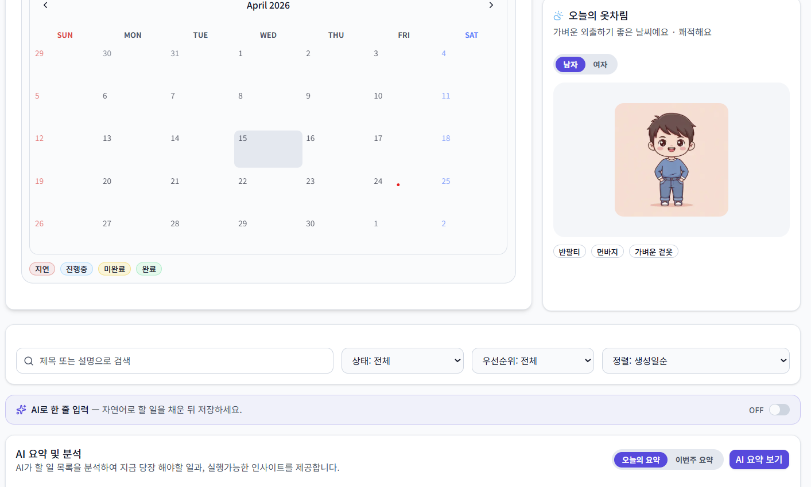

Vibe Coding for AI Service
자연어로 아이디어의 분위기(Vibe)를 정의하고, LLM과 상호작용하며 IA, 화면 플로우, 카피, 데이터 흐름을 동시에 진화시킵니다. [Byte Degree] Vibe Coding for AI Service 과정에서 AI 서비스 기획부터 프로토타이핑까지 전 과정을 실습했습니다.
Problem Solving with AI Vibe Coding
LLM과 에이전틱 AI를 활용해 복잡한 비즈니스 문제를 구조화하고, 바이브코딩(Vibe Coding)으로 빠르게 프로토타이핑하여 실제 서비스로 연결하는 전문 컨설턴트입니다.
AI를 실험적인 파트너로 두고, 문제의 본질을 먼저 정의한 뒤 바이브코딩으로 해법을 빠르게 검증합니다.
자연어로 아이디어의 분위기(Vibe)를 정의하고, LLM과 상호작용하며 IA, 화면 플로우, 카피, 데이터 흐름을 동시에 진화시킵니다. [Byte Degree] Vibe Coding for AI Service 과정에서 AI 서비스 기획부터 프로토타이핑까지 전 과정을 실습했습니다.
코드 이전에 AI와 함께 스토리, 톤앤매너, 인터랙션을 설계합니다. 이후 HTML/CSS/JS로 빠르게 구현하고, 다시 LLM에게 피드백을 받아 반복 개선하는 AI First Loop를 운영합니다.
아이디어 단계부터 배포까지, 필요한 단계에서 함께합니다. 어떤 도움이 필요하신가요?
아이디어는 있지만 어떻게 시작할지 모르는 분
막연한 아이디어를 AI와 함께 구조화하고, 클릭 가능한 프로토타입으로 빠르게 만들어드립니다. 투자자 피칭, 팀 설득, 아이디어 검증 모두 가능합니다.
상담 신청하기 →기능 요구사항이 정해졌고 실제 서비스가 필요한 분
기획부터 개발·배포까지 원스톱으로 진행합니다. LLM, 에이전트, DB, 인증까지 실서비스 수준의 AI 기반 웹 서비스를 빠르게 구축합니다.
상담 신청하기 →기존 서비스에 AI를 붙이고 싶은 분
운영 중인 서비스에 챗봇, 자동 요약, AI 추천, 자연어 입력 등 원하는 AI 기능을 빠르게 붙여드립니다. 기존 코드베이스와 호환성을 유지하며 진행합니다.
상담 신청하기 →AI 서비스 방향성과 전략을 정리하고 싶은 분
AI 서비스 아이디어의 타당성 검토, 기술 스택 선정, 개발 로드맵 수립을 도와드립니다. 외주 개발 전 방향을 명확히 잡고 싶은 분께 적합합니다.
상담 신청하기 →💬 어떤 유형인지 잘 모르겠어도 괜찮아요. 상담 폼에 아이디어만 적어주시면 함께 방향을 잡아드립니다.
무료 사전 상담 신청 →바이브코딩을 통해 문제 정의에서 솔루션 도출까지 실제로 구현한 프로젝트들입니다.


AIRA는 AI 창작자와 소비자를 연결하는 마켓플레이스, GenArt는 프롬프트 기반 시각 실험 Playground. 두 서비스 모두 Vibe Coding으로 기획부터 배포까지 구현했습니다.
만세력 사주 계산, 78장 타로 카드, 꿈해몽 RAG를 LLM과 통합하여 개인화된 운세 상담을 제공하는 Modern Spiritual 서비스를 바이브코딩으로 구현했습니다.
Next.js · Dify API · TypeScript · Tailwind CSS
사이트 열어보기
자연어로 할 일을 입력하면 AI가 자동으로 구조화하고, 날씨 기반 활동지수와 옷차림 추천까지 통합한 개인 생산성 서비스를 바이브코딩으로 구현했습니다.
Next.js · Supabase · Google Gemini · WeatherAPI
사이트 열어보기글로벌 AI 기업이 인증한 공식 자격으로, LLM과 Agentic AI에 대한 전문성을 검증받았습니다. 각 뱃지를 클릭하면 발급기관 인증 페이지에서 직접 확인할 수 있습니다.

에이전틱 AI 시스템의 설계, 구축, 평가, 운영 역량을 검증하는 Professional 레벨 자격.

LLM의 적응, 최적화, 배포에 대한 고급 전문성을 검증하는 자격.

OCI Generative AI 서비스를 활용한 LLM 애플리케이션 구축 역량을 검증하는 자격.

LLM과 에이전틱 AI를 활용한 서비스 기획, 프로토타이핑, 피드백 루프 전 과정을 이수한 수료 과정. AIRA·GenArt·혜안·AIFitDay 프로젝트의 기반을 구축했습니다.
의뢰 전에 가장 많이 궁금해하시는 내용을 정리했습니다. 여기 없는 질문은 상담 폼으로 편하게 남겨주세요.
네, 전혀 문제없습니다. 오히려 비개발자분들과의 작업이 더 많습니다. 아이디어와 풀고 싶은 문제만 있으시면 기술적인 부분은 제가 모두 담당합니다. 기획 단계에서 쉬운 언어로 충분히 설명해드리며 진행합니다.
물론입니다. "이런 문제를 해결하고 싶다"는 방향만 있어도 충분합니다. 오히려 아이디어가 불명확한 초기 단계에서 함께 구조화하는 것이 바이브코딩의 핵심 강점입니다. 사전 상담을 통해 함께 방향을 잡아드립니다.
프로젝트 범위에 따라 다르지만, 프로토타입은 48시간 내, MVP 풀스택 개발은 2~4주가 일반적입니다. AI 기능 추가·연동은 1~3주 내에 가능합니다. 상담 시 요구사항을 파악한 후 더 정확한 일정을 안내드립니다.
프로젝트 규모, 기능 복잡도, 기간에 따라 협의하여 결정합니다. 사전 상담에서 요구사항을 파악한 후 상세 견적을 드립니다. 단순 기능 추가부터 풀 MVP 개발까지 범위에 따라 유연하게 조율 가능합니다.
주로 카카오톡 또는 이메일로 진행하며, 필요 시 화상 미팅을 병행합니다. 주 1~2회 진행 상황을 공유하고, 중간 결과물을 직접 확인하실 수 있도록 배포 링크를 단계별로 제공합니다. 피드백은 언제든 환영합니다.
LLM·AI 에이전트를 활용한 웹 서비스 개발이 주 전문 분야입니다. AI 챗봇, 자동화 도구, 개인화 서비스, 데이터 분석 대시보드 등이 대표적입니다. 포트폴리오의 AIRA, 혜안, AIFitDay가 실제 작업 사례입니다. 아이디어가 있으시면 부담 없이 상담해주세요.
아이디어가 있으신가요? 어떤 단계든 좋습니다. 부담 없이 이야기 나눠보세요.
아래 연락처로 먼저 연락 주셔도 좋습니다.
상담 프로세스